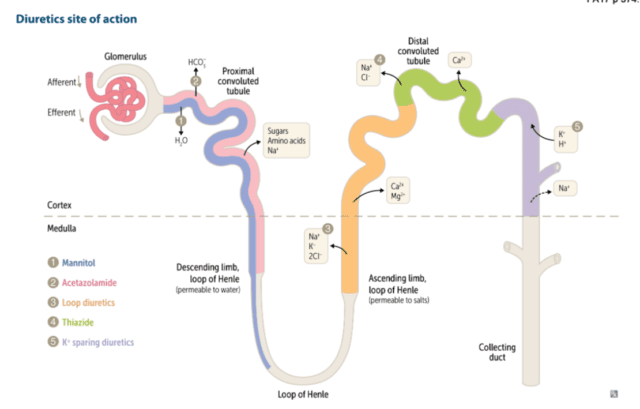

<button onClick="previous()" class="button"
        id="backward">&#8592;
 </button>
 <button onclick="next()" class="button"
         id="forward">&#8594;
  </button>

<div id="info" class="text"></div>
<div id="wrapper"><span class="label" id="chf">congestive<br> heart failure<br>(CHF)</span>
  <div class="branch lv1">
    <div class="entry"><span class="label" id="inotropes"><a>+ Inotropes</a></span>
      <div class="branch lv2">
        <div class="entry"><span class="label" id="digoxin"><a>Cardiac Glycoside</a></span>
        </div>
        <div class="entry"><span class="label" id="dobutamine"><a>Dobutamine</a></span>
        </div>
        <div class="entry"><span class="label" id="pdei"><a>PDE-inhibitor</a></span></div>
      </div>
    </div>


    <div class="entry"><span class="label" id="sglt2"><a>SGLT-2 inhibitor</a></span></div>

    <div class="entry"><span class="label" id="beta"><a>beta blockers</a></span>
      <div class="branch lv1">
        <div class="entry"><span class="label" id="noncardiobeta"><a>beta 1 & 2 antagonist (nonselective)</a></span>
        </div>
        <div class="entry"><span class="label" id="cardiobeta"><a>beta 1 antagonist (cardioselective)</a></span>
        </div>
      </div>
    </div>


    <div class="entry"><span class="label" id="ace"><a>ACE inhibitors</a></span>
    </div>

    <div class="entry"><span class="label" id="arni"><a>ARNi</a></span>
    </div>

    <div class="entry"><span class="label" id="sgc"><a>sGCS</a></span>
    </div>

    <div class="entry"><span class="label" id="diuretic"><a>Diuretics</a></span>
      <div class="branch lv2">
        <div class="entry"><span class="label" id="thi"><a>Thiazides</a></span>
        </div>
        <div class="entry"><span class="label" id="loop"><a>Loop</a></span>
        </div>
        <div class="entry"><span class="label" id="kspare"><a>K sparing</a></span>
          <div class="branch lv2">
            <div class="entry"><span class="label" id="aldant"><a>Aldosterone receptor antagonists</a></span>
            </div>
            <div class="entry"><span class="label" id="enac"><a>Epithelial Na channel blockers</a></span>
            </div>
          </div>
        </div>
        <div class="entry"><span class="label" id="osmo"><a>Osmotic</a></span>
        </div>
        <div class="entry"><span class="label" id="cai"><a>Carbonic Anhydrase Inhibitors</a></span>
        </div>
      </div>
    </div>
    <div class="entry"><span class="label" id="ccb"><a>Vasodilators</a></span>
      <div class="branch lv2">
        <div class="entry"><span class="label" id="diccb"><a>Dihydropyridine Ca channel blockers</a></span>
        </div>
        <div class="entry"><span class="label" id="nondiccb"><a>Non-Dihydropyridine Ca channel blockers</a></span>
        </div>
        <div class="entry"><span class="label" id="nitrate"><a>Nitrates</a></span>
        </div>
        <div class="entry"><span class="label" id="hydra"><a>Hydralazine</a></span>
        </div>
      </div>
    </div>
</div>


<script>
  var display = document.getElementById('info');
  display.position = "absolute";

  // When the user clicks on the modal, close it
  const labels = document.querySelectorAll('.label');
  display.onclick = function() {
        // display.style.display = "none";
        // display.visibility = "hidden";
        // display.style.zIndex = -1;
        display.innerHTML = "";
        labels.forEach(label => {label.setAttribute('style', 'background-color: none');}); //reset highlighted button
        document.getElementById("wrapper").style.zIndex = 1; //makes the classes clickable again but hides the popup text
  }

  labels.forEach(label => {
    label.addEventListener('click', function(){
        display.style.zIndex = 1;
        label.setAttribute('style', 'background-color:  powderblue;');
        //testing

        const labelRect = label.getBoundingClientRect();
        const displayRect = display.getBoundingClientRect();

        const right = labelRect.right
        const top = labelRect.top + window.scrollY;
        display.style.left = `${right + 20}px`;
        display.style.top = `${top}px`;

        //testing
        document.getElementById("wrapper").style.zIndex = -1;
      })
  }
  );

  chf.addEventListener('click', function(){ display.innerHTML = chf.textContent + "<ul><li>short-term strategy: increase cardiac output</li><li>long-term strategy: prevent cardiac remodeling and improve mortality</li></ul>";}, false);
  digoxin.addEventListener('click', function(){ display.innerHTML = digoxin.textContent + "<ul><li>inhibition of Na+/K+ ATPase --> increased intracellular Na+ --> reduced activity of Na+/Ca2+ exchanger --> increased intracellular Ca2+ --> increased cardiac contractility</li><li>also, decreases AV nodal conduction velocity</li><li>ex: digoxin</li><li>side effect: digoxin toxicity, heart block, ensure adequate repletion of electrolytes and monitor levels especially with changing renal function</li></ul>";}, false);
  inotropes.addEventListener('click', function(){ display.innerHTML = inotropes.textContent + "<ul><li>increase contractility of the heart</li></ul>";}, false);
  dobutamine.addEventListener('click', function(){ display.innerHTML = dobutamine.textContent + "<ul><li>selective beta 1 agonist</li><li>increases HR and cardiac contractility --> increase in cardiac output</li><li>side effects: can cause arrhythmias that often requires changing to a different agent</li></ul>";}, false);
  pdei.addEventListener('click', function(){ display.innerHTML = pdei.textContent + "<ul><li>blocks phosphodiesterase --> increased levels of cAMP and Ca2+ flow into cardiac myocyte --> increase in cardiac contractility</li><li>ex: inamrinone, milrinone</li><li>side effect: arrhythmias</li></ul>";}, false);

  sglt2.addEventListener('click', function(){ display.innerHTML = sglt2.textContent + "<ul><li>increase glucose excretion with urine through the inhibition of SGLT-2 in the kidney</li><li>ex: (-flozin), canagliflozin, dapagliflozin, empagliflozin</li><li>side effects: genital yeast infections and UTIs, glucosuria, polyuria and dehydration, diabetic ketoacidosis</li></ul>";}, false);

  beta.addEventListener('click', function(){ display.innerHTML = beta.textContent + "<ul><li>inhibit sympathetic activation of beta adrenergic receptors</li><li>improves mortality</li></ul>";}, false);
  cardiobeta.addEventListener('click', function(){ display.innerHTML = cardiobeta.textContent + "<ul><li>inhibit binding of beta 1 receptors, which are found mostly in the heart</li><li>reduce HR and contractility</li><li>inhibit renin production</li><li>ex: (-olol), atenolol, metoprolol, esmolol, acebutalol, betaxolol, bisoprolol</li><li>side effects: bradycardia, fatigue, dizziness, heart block (sometimes these are preclusions to their use because people cannot tolerate the side effects)</li></ul>";}, false);
  noncardiobeta.addEventListener('click', function(){ display.innerHTML = noncardiobeta.textContent + "<ul><li>inhibit binding of beta 1 and beta 2 receptors, affecting the heart, lungs, kidneys, vascular smooth muscle</li><li>reduce HR and contractility</li><li>inhibit renin production</li><li>ex: (-olol), propanalol, nadolol, pindolol, timolol</li><li>side effects: bradycardia, bronchoconstriction and asthma exacerbation, hypotension, fatigue, dizziness, heart block</li></ul>";}, false);

  ccb.addEventListener('click', function(){ display.innerHTML = ccb.textContent + "<ul><li>strategy: decrease vascular resistance (BP = CO x SVR)</li><li>blocks L-type Ca channels, present in myocardium and vascular smooth muscles</li><li>cause peripheral arterial vasodilation(drop in BP) and myocardial depression(negative chronotropic, inotropic, and dromotropic)</li><li>classified into two groups based on main site of action</li></ul>";}, false);
  diccb.addEventListener('click', function(){ display.innerHTML = diccb.textContent + "<ul><li>block L-type Ca2+ channels --> inhibit entry of Ca2+ into arteriolar smooth muscle --> arteriolar dilation and reduced SVR</li><li>work predominantly on arteriolar smooth muscle</li><li>potent vasodilatory effect</li><li>ex: Nifedipine, Amlodipine</li><li>note: Amlodipine has slower onset</li><li>side effect: edema</li></ul>";}, false);
  nondiccb.addEventListener('click', function(){ display.innerHTML = nondiccb.textContent + "<ul><li>block L-type Ca2+ channels --> inhibit entry of Ca2+ into arteriolar smooth muscle --> arteriolar dilation and reduced SVR</li><li>act equally on heart and arterioles, thus also reduce cardiac contractility</li><li>potent myocardial depressant effect</li><li>ex: Diltiazem, Verapamil</li><li>side effect: bradycardia, hypotension, avoid in HF</li></ul>";}, false);
  nitrate.addEventListener('click', function(){ display.innerHTML = nitrate.textContent + "<ul><li>release nitrous oxide --> increase in cGMP --> relaxation of arterial and venous smooth muscle --> reduction in SVR and BP</li><li>veins are more affected than arteries</li><li>venous pooling and decreased preload</li><li>ex: nitroglycerin, isosorbide dinitrate, isosorbide mononitrate</li><li>note: nitrate free interval is needed to avoid tolerance depending on the formulation</li><li>side effects: excessive hypotension, reflex tachycardia, headache, flushing</li></ul>";}, false);
  hydra.addEventListener('click', function(){ display.innerHTML = hydra.textContent + "<ul><li>greater vasodilatory effect of arterioles than veins</li><li>side effect: reflex tachycardia, hypotension, lupus-like effect</li></ul>";}, false);

  ace.addEventListener('click', function(){ display.innerHTML = ace.textContent + "<ul><li>inhibition of ACE, preventing conversion of AT1 to AT2</li><li>decreased AT2 levels reduces peripheral resistance and afterload</li><li>decreased aldosterone decreases salt and water retention which reduces preload</li><li>decreased breakdown of bradykinin results in increased kinin activity and vasodilation</li><li>side effect: cough due to elevated bradykinin, increased Scr, hyperkalemia, angioedema</li><li>ex: (-prils), captopril, lisinopril, enalapril</li></ul>";}, false);

  arni.addEventListener('click', function(){ display.innerHTML = arni.textContent + "<ul><li>Angiotensin Receptor-Neprilysin Inhibitor (ARNi or Entresto) = sacubitril + valsartan</li><li>valsartan: blocks AT2 receptors</li><li>sacubitril: blocks the breakdown of natriuretic peptides</li></ul>";}, false);
  sgc.addEventListener('click', function(){ display.innerHTML = sgc.textContent + "<ul><li>Soluble Guanylate Cyclase stimulators (sGCS) and activators reduce oxidative stress by increasing levels of nitric oxide in the heart and blood vessels</li></ul>";}, false);

  diuretic.addEventListener('click', function(){ display.innerHTML = diuretic.textContent + "<ul><li>strategy: decrease preload (BP = CO x SVR)</li><li>reduce blood volume by increasing the rate of urine excretion</li><li>categorized according to the renal structures they act on, changes in volume/composition of urine, and electrolyte balance</li></ul> img source: FA" + "";}, false);
  thi.addEventListener('click', function(){ display.innerHTML = thi.textContent + "<ul><li>inhibit Na+Cl- cotransports in DCT --> blocks Na+ and Cl- reabsorption --> NaCl is excreted along with water into the urine</li><li>increases Ca2+ reabsorption</li><li>ex: Hydrochlorothiazide, chlorothiazide, metolazone</li><li>side effect: HyperGLUC(glycemia, lipidemia, uricemia, calcemia), hyponatremia, hypomagnesemia, and hypokalemia</li></ul>";}, false);
  loop.addEventListener('click', function(){ display.innerHTML = loop.textContent + "<ul><li>inhibit Na+K+2Cl- cotransporter on thick ascending loop of Henle --> prevent Na+ and K+ reabsorption into renal medulla --> dimishing concentration gradient between renal medulla and cortex --> urine unable to be concentrated in collecting ducts --> increased diuresis</li><li>increase Ca2+ excretion</li><li>Sulfonamides: furosemide, torsemide, bumetanide</li><li>non-sulfur containing: ethacrynic acid</li><li>side effect: hypokalemia, hypomagnesemia, contraction alkalosis, tinnitus, hypovolemia, dizziness</li></ul>";}, false);
  kspare.addEventListener('click', function(){ display.innerHTML = kspare.textContent + "<ul><li>cause diuresis without significant potassium loss</li><li>because site of action is not in the proximal portions of the tubules, tubular flow is not increased (high tubular flow will increase K+ secretion)</li></ul>";}, false);
  aldant.addEventListener('click', function(){ display.innerHTML = aldant.textContent + "<ul><li>competitively bind to aldosterone receptors in DCT and collecting duct --> decreased Na+ reabsorption and K+ secretion --> diuresis</li><li>ex: spironolactone, eplerenone</li><li>side effect: hyperkalemia, spironolactone causes gynecomastia, hypomagnesemia, consider exclusions based on potassium and renal function</li></ul>";}, false);
  enac.addEventListener('click', function(){ display.innerHTML = enac.textContent + "<ul><li>inhibition of LENaC in the DCT and collecting duct --> decreased Na+ reabsorption and K+ secretion --> diuresis</li><li>ex: triamterene, amiloride</li><li>side effect: hyperkalemia, magnesium retention</li></ul>";}, false);
  osmo.addEventListener('click', function(){ display.innerHTML = osmo.textContent + "<ul><li>increases kidney tubular fluid osmolarity --> at the proximal tubule, pulls water from intersitial space into tubules via osmosis --> more water excretion</li><li>ex: mannitol, urea</li><li>side effects: dehyration without adequate water intake, increased ECF (leading to pulmonary edema)</li></ul>";}, false);
  cai.addEventListener('click', function(){ display.innerHTML = cai.textContent + "<ul><li>inhibit carbonic anhydrase at the PCT --> increase H+ reabsorption and inhibit Na+/H+ exchange --> increase bicarb elimination --> compensatory hyperventilation --> raise oxygenation</li><li>ex: acetazolamide</li><li>side effect: metabolic acidosis due to increased excretion of bicarb, renal stones due to decreased concentration of urine citrate, potassium wasting (increased Na+ delivery to distal nephron increases K+ excretion)</li></ul>";}, false);

  function next() {
      window.history.forward();
  }

  function previous() {
      window.history.back();
  }

</script>


<style>
.button {
          background-color: lightgray;
  }

  .text{
            float: right;
            position: absolute;
            width: 500px;
            <!-- border-style: groove; -->
            display: inline-block;
            background-color: #EBEBEB;
  }

a:hover {
        color: #ff0000;
        cursor: pointer;
    }

*,
*:before,
*:after {
  -webkit-box-sizing: border-box;
  -moz-box-sizing: border-box;
  box-sizing: border-box;
}
body {
  min-width: 1200px;
  margin: 0;
  padding: 50px;
  color: black;
  font: 16px Verdana, sans-serif;
  background: white;
  -webkit-user-select: none;
  -moz-user-select: none;
  -ms-user-select: none;
  user-select: none;
}
#wrapper {
  position: relative;
}
.branch {
  position: relative;
  margin-left: 250px;
}
.branch:before {
  content: "";
  width: 50px;
  border-top: 2px solid #000;
  position: absolute;
  left: -100px;
  top: 50%;
  margin-top: 1px;
}
.entry {
  position: relative;
  min-height: 60px;
}
.entry:before {
  content: "";
  height: 100%;
  border-left: 2px solid #000;
  position: absolute;
  left: -50px;
}
.entry:after {
  content: "";
  width: 50px;
  border-top: 2px solid #000;
  position: absolute;
  left: -50px;
  top: 50%;
  margin-top: 1px;
}
.entry:first-child:before {
  width: 10px;
  height: 50%;
  top: 50%;
  margin-top: 2px;
  border-radius: 10px 0 0 0;
}
.entry:first-child:after {
  height: 10px;
  border-radius: 10px 0 0 0;
}
.entry:last-child:before {
  width: 10px;
  height: 50%;
  border-radius: 0 0 0 10px;
}
.entry:last-child:after {
  height: 10px;
  border-top: none;
  border-bottom: 2px solid #000;
  border-radius: 0 0 0 10px;
  margin-top: -9px;
}
.entry.sole:before {
  display: none;
}
.entry.sole:after {
  width: 50px;
  height: 0;
  margin-top: 1px;
  border-radius: 0;
}
.label {
  display: block;
  min-width: 150px;
  padding: 5px 10px;
  line-height: 20px;
  text-align: center;
  border: 2px solid #000;
  border-radius: 5px;
  position: absolute;
  left: 0;
  top: 50%;
  margin-top: -15px;
}
</style>
